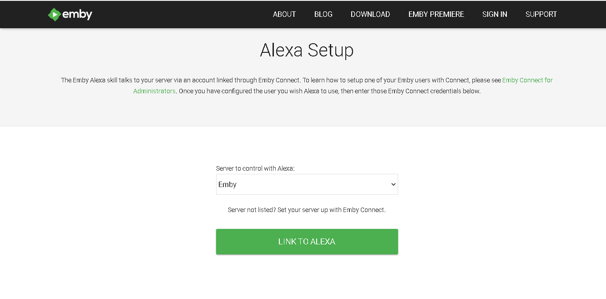
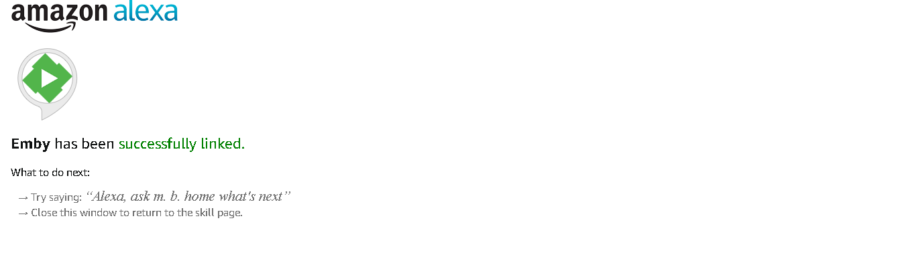

Amazon Alexa
Amazon Alexa ist ein cloudbasierter Sprachdienst, mit dem Sie Informationen abrufen und Geräte sowie Apps in Ihrer Umgebung, einschließlich Emby, steuern können. Sie können Alexa bitten, Musik abzuspielen, Nachrichten zu hören, das Wetter zu prüfen, Ihr Smart Home zu steuern und mehr.
Der Emby Skill ermöglicht es Benutzern, Informationen über ihre Medienbibliothek abzurufen und die Wiedergabe auf jedem Emby-kompatiblen Gerät zu steuern. Sobald Sie Ihr Emby-Konto erfolgreich mit Alexa verknüpft haben, können Sie mit Ihrer Stimme Ihre Lieblingsfilme und TV-Serien auf Ihren Geräten abspielen.
Erste Schritte
Der erste Schritt besteht darin, sicherzustellen, dass Ihr Emby Server für die Remote-Nutzung eingerichtet ist und Emby Premiere hat. Da Alexa ein cloudbasierter Dienst ist, benötigt es Zugang zu Ihrem Emby Server aus dem Internet. Bitte folgen Sie unseren Anweisungen zum Einrichten des Remote-Zugriffs.
Stellen Sie bitte sicher, dass Sie Ihr Alexa-Gerät gemäß den Anweisungen von Amazon eingerichtet haben und verifizieren, dass es für die allgemeine Verwendung mit Alexa funktioniert.
Nun können Sie einen Emby Skill einrichten, der mit Alexa arbeitet. Öffnen Sie dazu die Amazon Alexa-App oder die Amazon Alexa-Web-App und navigieren Sie zu:
Skills > Ihre Skills > Emby > Konto verknüpfen

Klicken Sie auf den Emby Skill

Klicken Sie oben rechts auf die Schaltfläche, um den Skill zu AKTIVIEREN.

Geben Sie Ihren zuvor erstellten Emby Connect-Benutzernamen sowie Ihr Passwort ein und klicken Sie auf die Schaltfläche ANMELDEN.

Nun können Sie auswählen, welchen Emby Server Sie steuern möchten. Wenn Sie nur einen Server haben, ist dies die einzige Wahl. Wählen Sie Ihren Server aus und klicken Sie auf die Schaltfläche MIT ALEXA VERKNÜPFEN.

Sie sollten eine Bestätigungsseite sehen, die die erfolgreiche Verknüpfung Ihres Emby Connect-Benutzernamens mit Alexa anzeigt.
Sie können eine ähnliche Einrichtung auf Ihrem iOS- oder Android-Gerät mit der Alexa-App durchführen
(Bildschirmfoto mobil)

Wenn Sie auf Probleme stoßen, überprüfen Sie bitte die obigen Informationen, und wenn das Problem weiterhin besteht, suchen Sie bitte Unterstützung in unseren Foren und unter folgendem Ort: https://emby.media/community/index.php?/forum/174-amazon-alexa/
Alexa trainieren
Alexa kann anfangs Schwierigkeiten haben, das Wort Emby zu verstehen. Es gibt Möglichkeiten, diese Situation zu verbessern.
Nur Englisch US
Wenn Alexa auf Englisch US eingestellt ist, haben Sie Zugriff auf das Stimme-Training. Damit wird Alexa beginnen, Sie zu verstehen, anstatt zu raten, was Sie gesagt haben. In der Amazon Alexa-App oder der Amazon Alexa-Web-App navigieren Sie zu:
Einstellungen > Unter Konten > Stimme-Training
Alle Sprachen
Die Amazon Alexa-App bietet Feedback-Karten für Skills. Dies ermöglicht Alexa sich selbst zu korrigieren, indem diese Karten je nachdem, ob Alexa Sie richtig verstanden hat oder nicht, positiv oder negativ markiert werden. In der Amazon Alexa-App oder der Amazon Alexa-Web-App navigieren Sie zu:
Startseite > Karten bezüglich Emby > Mehr > Hat Alexa Sie richtig verstanden?
Einstellungen > Allgemein > Verlauf > Hat Alexa gemacht, was Sie wollten?
Befehle
Wie man Alexa benutzt
- Jeder Befehl muss mit anfangen:Alexa, sag/frag m. b. home - [Befehl einfügen] zu.
- Alternativ können Sie eine Emby-Sitzung mit starten: Alexa, - starte/beginne/öffne m. b. home
Der Vorteil einer Emby-Sitzung ist, dass Sie mehrere Befehle geben können, ohne Emby aufrufen zu müssen, solange die Sitzung aktiv ist. Sitzungen werden automatisch nach 8 Sekunden Inaktivität beendet (wenn der blaue Ring Ihres Alexa-Geräts erlischt). - Sie können das, was Alexa gerade tut, mit stoppen: Alexa, abbrechen/schon gut. Alexa wird auch Ihre Anfrage verwerfen, wenn Sie nicht innerhalb von 8 Sekunden antworten.
- Nicht alle Befehle sind mit jeder Emby-App kompatibel. Wenn Sie auf ein Problem stoßen, posten Sie bitte hier.
- Um einen Befehl an einen bestimmten Player zu richten, fügen Sie auf einem anderen Player oder auf [Player-Name] am Ende Ihres Befehls an.
- Hier ist die Liste der unterstützten Medientypen: Episode, Film, Show, Staffel, Lied, Album, Künstler, Hörbuch, Kanal, Wiedergabeliste
- Teile von Befehlen in den unten angegebenen Klammern sind optional.
Alexa als Player verwenden
Audio-Wiedergabe wird derzeit unterstützt. Diese Funktion erfordert, dass Ihr Server mit einer SSL-Verschlüsselung gesichert ist. Im Bedarfsfall lesen Sie bitte diese Anleitung. Selbstsignierte Zertifikate werden dafür nicht unterstützt.
Bitten Sie m. b. home, Musik abzuspielen. Geben Sie "auf diesem Player" oder "auf Alexa" am Ende Ihrer Anfrage an, um die Player-Auswahl zu überspringen. Sobald die Musikwiedergabe mit dem Skill gestartet ist, können Sie diese Steuerungen verwenden (beachten Sie, dass Sie m. b. home nicht aufrufen):
- Alexa, Weiter
- Alexa, Vorherige
- Alexa, Pause
- Alexa, Fortsetzen
- Alexa, von vorne
- Alexa, Wiederholen
(Dies wiederholt den aktuell gespielten Artikel. "Wiederholen aus" zum Ausschalten)
Welcher Player?
Sie können einen Player als Standard setzen. Wenn am Ende Ihres Befehls kein Geräte-/Playername enthalten ist, wird er automatisch an Ihren Standard-Player gesendet.
- wechsle den Player (zu {Player- oder Gerätename})
- wechsle meinen Player zu Wohnzimmer-TV
Welcher Emby-Benutzer?
Standardmäßig wird der Skill denselben Emby-Benutzer verwenden, der verwendet wurde, um Alexa mit Emby zu verknüpfen. Es kann jedoch mit folgenden Befehlen geändert werden:
- wer ist der aktive Benutzer?
- wechsle den Benutzer (zu {Emby-Benutzername})
Zusätzliche Benutzer
Teilen Sie den Wiedergabestatus der aktuell abgespielten Inhalte, indem Sie weitere Emby-Benutzer zu Ihrer Sitzung hinzufügen.
- wer ist in der Sitzung?
- füge {Benutzername} zu meiner Sitzung hinzu
- entferne {Benutzername} (und {Benutzername 2}) aus meiner Sitzung
Navigation
Sie können durch Ihre Oberfläche navigieren, indem Sie die Bewegung oder Aktion aussprechen, die Sie ausführen möchten.
- nach oben/unten/links/rechts bewegen
- Seite hoch/runter
- auswählen
- stumm schalten/stumm ausschalten
- nach Hause gehen
- zum nächsten/vorherigen Buchstaben gehen
- Kontextmenü/TV-Guide/Such-Menü/Player-Menü (OSD)/Einstellungen zeigen/anzeigen/einblenden
Wiedergabe
- pause, vorherige, nächste, spiele (den ausgewählten Inhalt), stoppe oder - Wiedergabe stoppen
- die Lautstärke setzen (auf {Prozent})
- Ändere die Audiospur (auf {Sprache})
- Untertitel ändern/aktivieren/deaktivieren
- die Untertitel (auf {Sprache}) ändern
- auf {Zeit} spulen oder von vorne anfangen
- auf (plus/minus) {Zeit} spulen
- zu Kapitel {Nummer} springen
- zum nächsten/vorherigen Kapitel gehen
Medienwiedergabe
Standardmäßig ist Alexa eingestellt, um Videoinhalte zu durchsuchen, wenn der Inhaltstyp nicht spezifiziert ist. Das bedeutet, für jeden anderen Typ müssen Sie den Inhaltstyp einschließen, um ordnungsgemäße Ergebnisse zu erzielen.
- (den Film) {Film} spielen
- (die Show) {Serie} spielen
- die Episode von {Serie} fortsetzen
- den Künstler {Künstler} spielen
- das Lied {Lied} (von {Album}, von {Künstler}) spielen
- das Hörbuch {Titel} abspielen
- Kanal {Name} einschalten
Hier sind ein paar Beispiele
- Staffel 2 von Game of Thrones anmachen
- Supernatural, Staffel 5, Episode 12 abspielen
- die neue Episode von Gotham abspielen
- die nächste Episode von Orange is the new black schauen
Vorschläge
Mit Ja oder Nein auf den Vorschlag antworten.
- gib mir einen Vorschlag
- schlage mir ein ({Genre}) {Inhaltstyp, z.B. Film} vor
- ich weiß nicht, welche ({Episode}) ich schauen soll
- was ist gut?
Zufälligen Inhalt spielen
- irgendetwas abspielen
- einen Film abspielen (Genre {Genre})
- eine Episode von {Serie} abspielen
- ein paar Folgen abspielen
- als nächstes abspielen
Zufällige Musik abspielen
- die Musik starten
- etwas Musik auflegen (Genre {Genre})
- Lieder (Genre {Genre}) abspielen
- Lieder von {Künstler} abspielen
- Lieder aus dem Album {Album} abspielen
Zuletzt hinzugefügt
- was ist neu?
- was wurde kürzlich hinzugefügt?
- welcher {Inhaltstyp, z.B. Film} wurde neu hinzugefügt?
Als nächstes
- was kommt als nächstes
- was ist als nächstes dran
Fortsetzen der Wiedergabe
- was kann ich weitersehen?
- welchen (Film) habe ich zuletzt angeschaut/hörbuch gehört?
Elementmodifikation
- {Titel} aus meinen Favoriten entfernen
- ({Inhaltstyp, z.B. Film}) {Titel} zu meinen Favoriten hinzufügen
- ich liebe {medientyp, z.b. music video} {musikvideo}
- {medientyp, z.b. Film} {Titel} als gesehen/ungesehen markieren
Wiedergabe zwischen Geräten übertragen oder kopieren
Übertragen stoppt zuerst die Wiedergabe. Kopieren beginnt einfach dort, wo Sie aufgehört haben, auf dem Gerät Ihrer Wahl. Standardmäßig wird die fehlende Information mit Ihrem Standardplayer ausgefüllt.
- Übertragen/Kopieren der Wiedergabe (von {Player}) (zu {Player})
- Umschalten/Kopieren der Wiedergabe (zu {Player}) (von {Player})
Beispiel
- Die Wiedergabe von Chrome zu Theater übertragen.
- Die Wiedergabe auf iPhone kopieren. Wenn der Ursprung der Wiedergabe weggelassen wird, wird er automatisch von Ihrem Standardplayer gegriffen.
Hilfe
Wenn Sie jemals unsicher sind, welche Befehle der Player unterstützt, fragen Sie Emby nach:
- den verfügbaren Befehlen
- Hilfe
Ihr Emby Connect-Konto ändern
Sie können problemlos das mit Alexa verknüpfte Emby Connect-Konto ändern. Zuerst müssen Sie den Emby Skill deaktivieren. Dann, nach erneuter Aktivierung, führen Sie den Konto-Verknüpfungsprozess wie oben gezeigt erneut durch.